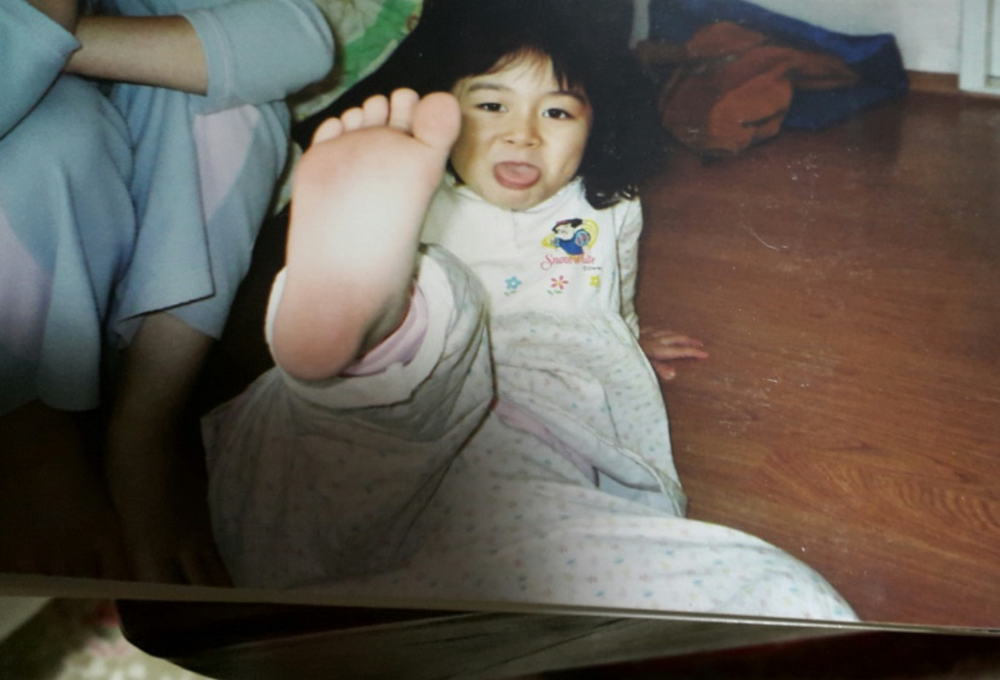

0~7세
2001년 11월 01일 출생.
이 시기의 내 모습을 기억하는 사람은 아마 부모님일 것이다.
부모님의 말을 빌리면 아주 예뻤다고 한다.

어릴 때야 다 예쁘지 라고 생각하지만, 정말 예쁘긴 했다.
부모님은 발레를 시키려고 했단다.
하지만 공교롭게도, 나는 태어날 때부터 청개구리였다. 태권도를 하고 싶었다.

태권도를 배우는 건 꽤 재밌었다. 성격도 활발했지만, 학교라는 사회에 던져지자마자 무시, 경멸, 멸시받아서 소극적으로 변했다.
그때는 왜 나를 괴롭히나 싶었는데, 생각해보면 내가 너무 까불고 촐랑댔다. 부모님도 키우기 참 버거웠을 것이다.